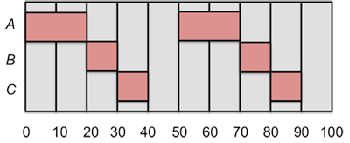

Real-Time Process Scheduling
February 21, 2012 [original: September 27, 2010]
I don't care how; I want it now!
— Willy Wonka and the Chocolate Factory
What's wrong with priorities?
When we looked at scheduling policies for time-sharing systems, we found that attaching priorities to processes provided a convenient mechanism for proper scheduling (favoring processes with higher priorities). Unfortunately, there are some mysteries and uncertainties involved with priorities as well. Let's consider the two forms:
- Fixed priorities:
- If we assign too many processes to high priority levels, they may keep the CPU busy all the time and lower priority processes will starve. Also, what priority is one to pick? Should my process be priority level 4 or level 6? What's the difference? A priority only make sense when compared to the priorities of all the other processes on the system and provide no assurance of getting a certain amount of CPU time on their own. Even a high priority process can itself starving if an even higher priority process starts to run. If other processes come in at the same level, the process may end up sharing the CPU round-robin.
- Dynamic priorities:
- With dynamic priorities, our priority will be adjusted by the operating system. It may be lowered when the process has been using a lot of the CPU and raised for interactive jobs. At any given time, a process generally has no idea what its priority level is.
Real-time demands
A process frequently does not need all of the CPU time, but needs enough to finish its task in a certain, often critical, amount of time. Consider, for example, the task of decompressing a video frame and sending it to a display device. We do not need 100% of the CPU all the time, but we need enough of it at proper intervals to decompress and send the video frames at a sustained rate of, say, 30 frames per second. As another example, suppose a core meltdown was detected at the Springfield Nuclear Power Plant. A process managing the corrective actions might have a very tight deadline of 1 minute to complete its tasks.
What priority levels should we assign to these important (time-critical) tasks? If there is only one such process, we can give it the highest priority. What if there are several time-critical processes? The schedulers we studied for time-sharing systems were primarily designed to be fair to the system and to processes or users. Their goal was to put the CPU and system resources to the best use and to minimize average response time. Unfortunately, they are generally inadequate to support real-time demands.
Deadlines
Real-time processes are often specified as having a start time (release time) and a stop time (deadline). The release time is the time at which the process must start after some event occurred that triggered the process. For example, suppose that a collision sensor interrupt must start airbag deployment within 20 msec. of sense time. The deadline is the time by which the task must complete. The scheduler must allot enough CPU time to the job so that the task can indeed complete. There are several times of deadlines. A hard deadline is one in which there is no value to the computation if it completes after the deadline.
Some systems require even more strict scheduling because real harm can result if the process is dispatched either too early or if it misses its deadline. These systems are called safety critical systems.
Luckily, most real-time demands that we can expect to encounter on general purpose time-sharing computer systems fall in the category of soft deadlines. With a soft deadline, the value of a late result diminishes but doesn't immediately disappear with time. That is, you can sometimes be a little late with no harm done. Consider a video server that is required to generate 30 video frames per second. This means that a frame has to be generated every 33.3 milliseconds. What if it is 5 millisecond late? The user probably will not notice. What if it is 40 milliseconds late? Well, by then we expect to present the next frame and there is no value in the current data.
Real-time operating systems
If you are serious about meeting hard deadlines or designing a safety critical system, you will likely need to run a real-time operating system on a system that is dedicated to those tasks and minimizes all other forms of interference. For example, you may not be able to afford wasting time servicing disk interrupts and you certainly will not want to move memory pages back and forth between the disk and memory for fear of the time it will take to retrieve them if they are suddenly needed. You also will need to ensure that your operating system has preemptable system calls since you don't want a process held up because the operating system is tied up servicing a system call.
A real-time operating system has a well-specified maximum time for each action that it performs to support applications with precise timing needs. Systems that can guarantee these maximum times are called hard real-time systems. Those that meet these times most of the time are called soft real-time systems. Deploying an airbag in response to a sensor being actuated is a case where you would want a hard real-time system. Decoding video frames is an example of where a soft real-time system will suffice. Real-time systems will usually have the following characteristics:
- Priority-based scheduler
- Guaranteed maximum time to service interrupts
- Ability to ensure that processes are fully loaded into memory and stay in memory
- Consistent and efficient memory allocation
- Preemptable system calls
Process types
As we start to use terms such as compute time and deadline, it helps to see how these terms relate to different categories of processes:
- Terminating processes: A terminating process may be considered as one that runs and then exits (terminates). We are interested in the amount of time that it takes it to run to completion. Its deadline is the time that at which it should complete all its work and its compute time is the amount of CPU time it needs.
-
Nonterminating processes: For processes such as video and audio servers as well as editors, we are not interested in the terminating time of these processes but rather in the time between events. For example, we would like our audio server to fill a 4K byte audio buffer every 500 milliseconds or we would like our video server to provide a new video frame every 33.3 milliseconds. For these processes, the compute time is the CPU time that the process needs to compute its periodic event and the deadline is the time at which it must have the results ready. Nonterminating processes may be divided into two classes:
- Periodic: A periodic process has a fixed frequency at which it needs to run. For example, a video decompressor may have to run 30 times per second at 33.3 millisecond intervals.
- Aperiodic: Aperiodic processes have no fixed, cyclical, frequency between events. Event interrupts may occur sporadically and event computation times may vary dramatically. For purposes of scheduling, we use the shortest period and the longest computation time to play it safe.
How much can we do?
The CPU cannot work magic. If we want to have our system process four video streams at the same time at 30 frames per second and processing a single frame requires 40 milliseconds of CPU time, we will be forced to fail in our scheduling needs. There is just not enough CPU time to go around. If C represents our computation time and D represents the deadline, the following relation must hold:
C ≤ D
This assures us that we will have enough CPU time to complete the task. Moreover, for periodic tasks, the deadline must be within the period. If the period of the process is T, the following relation must now hold:
C ≤ D ≤ T
Let's now look at a few popular algorithms for scheduling processes with real-time constraints.
Earliest deadline scheduling
Earliest deadline scheduling is simple in concept. Every process tells the operating system scheduler its absolute time deadline. The scheduling algorithm simply allows the process that is in the greatest danger of missing its deadline to run first. Generally, this means that one process will run to completion if it has an earlier deadline than another. The only time a process would be preempted would be when a new process with an even shorter deadline becomes ready to run. To determine whether all the scheduled processes are capable of having their deadlines met, the following condition must hold :
This simply tells us sum of all the percentages of CPU time used per process has to be less than or equal to 100%.
Least slack scheduling
This method is similar to shortest remaining time scheduling with the concept of a deadline thrown in. The goal is to pick the process that we can least afford to delay. This differs from earliest deadline scheduling because we're not looking only at the deadline, but at the amount of time we can procrastinate (work on something else) before we will have to put 100% of the CPU resource to finishing the task. Least slack is computed as the time to the deadline minus the amount of computation. For example, suppose that our remaining computation time, C, is 5 msec. and the deadline, D, is 20 msec. from now. The slack time is D - C, or 15 msec. The scheduler will compare this slack time with the slack times of other processes in the system and run the one with the lowest slack time.
The effect of least slack scheduling is significantly different from that of earliest deadline scheduling. With earliest deadline, we will always work on the process with the nearest deadline, delaying all the other processes. With least slack scheduling, we get a balanced result in that we attempt to keep the differences from deadlines balanced among processes. If the CPU has no problem meeting all deadlines, both scheduling policies will work satisfactorily. If there is too much of a workload and some deadlines must be missed, earliest deadline will satisfy the processes with the earliest deadlines (assuming all processes arrived at the same time) because it started working on them early. Processes with later deadlines will get delayed significantly. With least slack scheduling, all deadlines will be missed, but they all will be missed by roughly the same amount of time. Which is better? It depends on the applications. The same scheduling constraint applies to Least Slack scheduling as to Earliest Deadline First scheduling.
Rate monotonic analysis
Rate monotonic analysis is a technique for assigning static priorities to periodic processes. As such, it is not a scheduler but a mechanism for governing the behavior of a preemptive priority scheduler. A conventional priority scheduler is used with this system, where the highest priority ready process will always get scheduled, preempting any lower priority processes.
A scheduler that is aware of rate monotonic scheduling would be provided with process timing parameters (period of execution) when the process is created and compute a suitable priority for the process. Most schedulers that support priority scheduling (e.g., Windows, Linux, Solaris, FreeBSD, NetBSD) do not perform rate monotonic analysis but only allow fixed priorities, so it is up to the user to assign proper priority levels for all real-time processes on the system. To do this properly, the user must be aware of all the real-time processes that will be running at any given time and each process' frequency of execution (1/T, where T is the period). To determine whether all scheduled processes can have their real-time demands met, the system has to also know each process' compute needs per period (C) and check that the following condition holds:
To assign a rate monotonic priority, one simply uses the frequency information for each process. If a process is an aperiodic process, the worst-case (fastest) frequency should be used. The highest frequency (smallest period) process gets the highest priority and successively lower frequency processes get lower priorities.
Scheduling is performed by a simple priority scheduler. At each quantum, the highest priority ready process gets to run. Processes at the same priority level run round-robin.
Here is an example of ratemonotonic priority assignment. Suppose we have the following processes:
A runs every 50 msec for 20 msec
B runs every 50 msec for 10 msec
C runs every 30 msec for 10 msec
Rate-monotonic assignment requires that the highest frequency process(es) (B and C) get the highest priority and A, having the lowest frequency of execution, gets a lower priority. If we do not follow the rules and give A the highest priority, B the next highest, and C the lowest, the CPU will run processes in the following order:

This does not give us the desired performance because, while processes A and B get scheduled acceptably, process C is late the second time it is scheduled and misses an entire period! Now let us reverse the priorities as ratemonotonic assignment would dictate:
The scheduler can now satisfactorily meet the real-time requirements these tasks. Rate monotonic priority assignment is guaranteed to be optimal. If processes cannot be scheduled using rate monotonic assignment, the processes cannot be properly scheduled with any other static priority assignment.
References
- Real-Time System Scheduling, Audsley, N and Burns, A., Department of Computer Science, University of York, UK, © 1990
- Introduction to Rate Monotonic Scheduling, by David Steward and Michael Barr, Netrino, November 8, 2007.
- Rate-monotonic scheduling, Wikipedia
- Schedulability constraints for Earliest Deadline First and Rate Monotonic scheduling are from: Lin and Layland, Scheduling Algorithm for Multiprogrammability in Hard Real Time Environments, Journal of the ACM, 20(1)-46-61, January 1973.